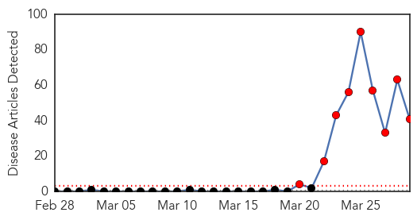
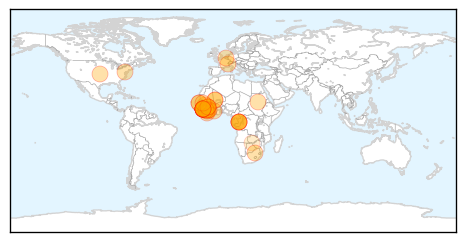

30 Day Trends
Web: 9 alerts, 0 warnings
Twitter: 5 alerts, 0 warnings
Top Articles:
- 1.000
- Guinea seeks to prevent spread of Ebola virus in capital
- 1.000
- 70 Dead In Guinea Ebola Outbreak
- 1.000
- Ebola Outbreak Spreads to Conakry, Poses New Challenges
- 1.000
- Ebola spread to Guinea capital raises fears
- 1.000
- Senegal shuts land border with Guinea to prevent Ebola spreading
- 1.000
- Guinea battles to contain Ebola as Senegal closes its border
- 1.000
- Guinea issues bushmeat warning after Ebola outbreak:Thursday 27 March 2014
- 1.000
- West African nations scramble to contain Ebola threat:Tuesday 25 March 2014
- 1.000
- EU Pledges EUR 500000 To Help Contain Ebola Outbreak In West Africa
- 1.000
- Senegal shuts land border with Guinea to prevent Ebola spreading
- 1.000
- Ebola spread to Guinea capital raises fears
- 1.000
- Guinea scrambles to contain deadly Ebola outbreak
- 1.000
- Ebola epidemic could become global crisis, experts warn
- 1.000
- W. African nations scramble to prevent spread of Ebola
- 1.000
- Senegal shuts land border with Guinea
- 1.000
- Ebola Outbreak Spreads to Conakry Poses New Challenges
- 1.000
- Ebola spread to Guinea capital raises fears
- 1.000
- Senegal shuts land border with Guinea to prevent Ebola spreading
- 1.000
- No outbreak of Ebola virus in Nigeria -FG
- 1.000
- Ebola virus reaches Guinea's capital Conakry
- 1.000
- Ebola 'a regional threat' as contagion spreads
- 1.000
- Guinea: Ebola death toll reaches 70
- 1.000
- Ebola outbreak in Guinea may spread to Liberia
- 0.999
- Scant Funds, Rare Outbreaks Leave Ebola Drug Pipeline Slim
- 0.999
- Guinea scrambles to stop spread of Ebola in the capital
- 0.999
- Scientists are closing in on drugs that may stop the deadly Ebola virus
- 0.999
- the edge of knowledge
- 0.999
- Doctors group sounds alarm over Ebola outbreak
- 0.999
- No Guinea travel warning despite Ebola outbreak: WHO
- 0.999
- The most from the coast
- 0.999
- Corgenix and Viral Hemorrhagic Fever Consortium Partners to Expand West African Ebola Virus Testing Capabilities BioNews Texas
- 0.996
- Guinea on edge as Ebola spreads
- 0.995
- Corgenix and Research Partners to Expand Ebola Virus Testing Capabilities in Sierra Leone
- 0.995
- Beware of bats: Guinea issues bushmeat warning after Ebola outbreak
- 0.993
- Ebola Outbreak in Guinea Confirmed
- 0.992
- West Africans Worried About Ebola Outbreak
- 0.992
- Guinea seeks to stem spread of deadly Ebola virus in capital
- 0.987
- Senegal shuts land border with Guinea to prevent Ebola spreading
- 0.985
- Senegal shuts land border with Guinea to prevent Ebola spreading
- 0.976
- UNICEF steps up response in Guinea as Ebola reaches capital - Guinea
- 0.619
- African presidents conspiring against Africa
Top Tweets:
-
No tweets found for Mar 29, 2014
Web/News Articles
Tweets

Article Locations
Article Confidences